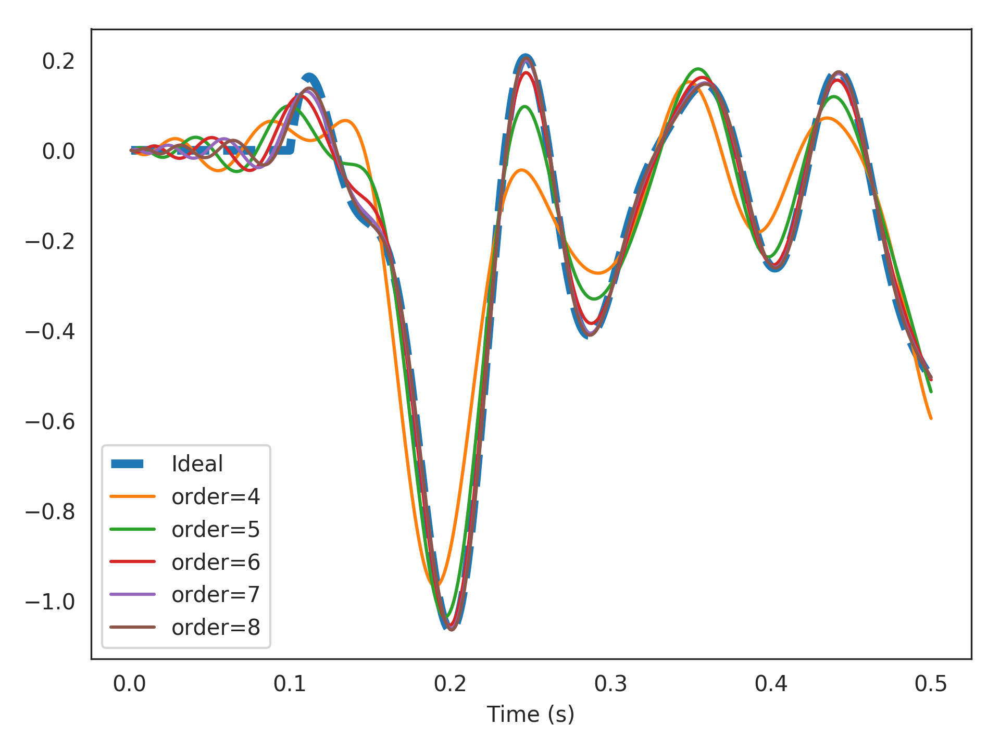
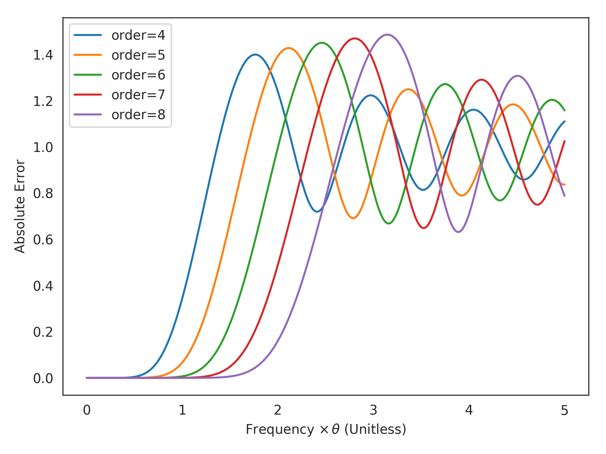

nengolib.synapses.PadeDelay¶
-
nengolib.synapses.PadeDelay(theta, order, p=None)[source]¶ A finite-order approximation of a pure time-delay.
Implements the transfer function:
\[F(s) = e^{-\theta s} + \mathcal{O}(s^{\texttt{order}+\texttt{p}})\]or \(y(t) \approx u(t - \theta)\) in the time-domain (for slowly changing inputs).
This is the optimal approximation for a time-delay system given low-frequency inputs implemented using a finite-dimensional state. This is achieved via Padé approximants. The state-space of the system encodes a rolling window of input history (see
RollingWindow). This can be used to approximate FIR filters and window functions in continuous time.Parameters: - theta :
float Length of time-delay in seconds.
- order :
integer Order of approximation in the denominator (dimensionality of resulting system).
- p :
integer, optional Order of approximation in the numerator. Defaults to
p=order-1, since this gives the highest-order approximation without a passthrough. Ifp=order, then the system will have a passthrough, which has a nonideal step response.
Returns: - :class:`.LinearSystem`
Finite-order approximation of a pure time-delay.
Notes
Closed-form derivations are found in [1].
References
[1] A. R. Voelker and C. Eliasmith, “Improving spiking dynamical networks: Accurate delays, higher-order synapses, and time cells”, 2017, Submitted. [URL] Examples
>>> from nengolib.synapses import PadeDelay
Delay 15 Hz band-limited white noise by 100 ms using various orders of approximations:
>>> from nengolib.signal import z >>> from nengo.processes import WhiteSignal >>> import matplotlib.pyplot as plt >>> process = WhiteSignal(10., high=15, y0=0) >>> u = process.run_steps(500) >>> t = process.ntrange(len(u)) >>> plt.plot(t, (z**-100).filt(u), linestyle='--', lw=4, label="Ideal") >>> for order in list(range(4, 9)): >>> sys = PadeDelay(.1, order=order) >>> assert len(sys) == order >>> plt.plot(t, sys.filt(u), label="order=%s" % order) >>> plt.xlabel("Time (s)") >>> plt.legend() >>> plt.show()
- theta :
nengolib.synapses.pade_delay_error¶
-
nengolib.synapses.pade_delay_error(theta_times_freq, order, p=None)[source]¶ Computes the approximation error in
PadeDelay().For a given order, the difficulty of the delay is a function of the input frequency (\(s = 2j \pi f\)) times the delay length (\(\theta\)).
Parameters: - theta_times_freq :
array_like A float or array of floats (delay length times frequency) at which to evaluate the error.
- order :
integer orderparameter passed toPadeDelay().- p :
integer, optional pparameter passed toPadeDelay(). Defaults toNone.
Returns: - ``np.array`` of ``np.complex``
Shaped like
theta_times_freq, with each element corresponding to the complex error term\[F(2j \pi f) - e^{-\theta \times 2j \pi f}\]where \(F(s)\) is the transfer function constructed by
PadeDelay()for a delay of length \(\theta\).
See also
Examples
>>> from nengolib.synapses import pade_delay_error >>> abs(pade_delay_error(1, order=6)) 0.0070350205992081461
This means that for
order=6and frequencies less than1/theta, the approximation error is less than one percent!Now visualize the error across a range of frequencies, with various orders:
>>> import matplotlib.pyplot as plt >>> freq_times_theta = np.linspace(0, 5, 1000) >>> for order in range(4, 9): >>> plt.plot(freq_times_theta, >>> abs(pade_delay_error(freq_times_theta, order=order)), >>> label="order=%s" % order) >>> plt.xlabel(r"Frequency $\times \, \theta$ (Unitless)") >>> plt.ylabel("Absolute Error") >>> plt.legend() >>> plt.show()
- theta_times_freq :